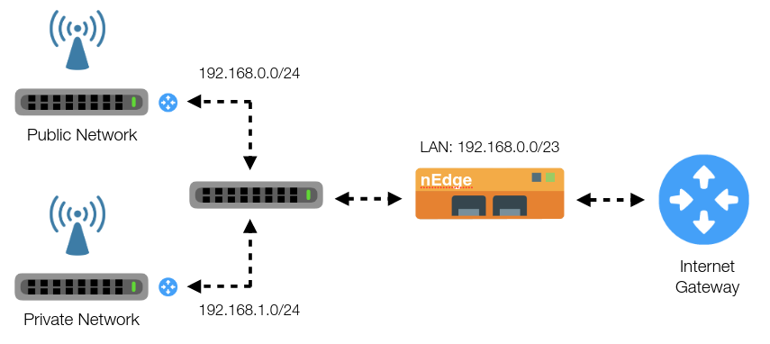

Users
nEdge uses the concept of users to group devices together.

User configuration page
Depending on the specific context, the user can be used to either represent an actual person or a group of people. In an home environment, for example, a user “mike” could be created to represent a real person. In this case the user will group Mike’s devices together. In a corporate network, however, a user “employee” would be more appropriate, to group all employees’ devices.
In nEdge, the Not Assigned user is a special user that groups together all the new devices. It can be used to define “default” policies to be applied, for example, on unknown devices. This only works if the captive portal is disabled, otherwise the unassigned devices traffic will blocked until proper authentication.
User Configuration
A user configuration includes the following information:
A flag which indicates if Child Safe is enabled on the user
The user policy configuration (fallback policy, total quotas)
Per-protocol and per category policies
The user routing policy (router mode only)

User configuration page
The Child Safe option enables child protection for the specified user by blocking adult web sites. More information about policies can be found on the policies section.
Assigning Devices to a User
When creating a user, the user and password fields will be used as the access credentials for the captive portal user authentication. After a successful authentication, the device will be added to the specified user.

Add a new user
A device can also be manually assigned to a specific user by entering the device page in nEdge and selecting a user from the users dropdown.

Manually assign a device to a user
It is also possible to kick a device out of the captive portal and force a new authentication by assigning the device to the “Not Assigned” user.
Segmenting the Network
Applying policies to individual devices can be difficult on a large or dynamic network. This could be solved by enabling a captive portal and enforcing the devices authentication through it. However, in some cases it is desirable to avoid displaying the captive portal at all for example for an internal network. In this case, the LAN network should be segmented by the means of routers and nEdge configured properly to include all the LAN segments via a network CIDR. Here is an example.


Segmenting LAN Network
In this example, all the devices connected to the Private access point should be able to access the internet without captive portal authentication, whereas the devices connecting to the Public access point must be authenticated. By using two routers to segment the LAN network, it’s now possible to identify the devices groups by their network address. In particular, the private network is identified by the CIDR 192.168.1.0/24 whereas the public network by 192.168.0.0/24. From the users management page is now possible to create a user “private” and then to add the network 192.168.1.0/24 to its members.

Binding the private LAN to a user
All the devices with an IP address inside the 192.168.1.0/24 will now be part of the “simone” user, so no captive portal will be shown for them.
Note
The LAN network now consists of two subnets. In order to correctly identify both subnets as local in nEdge, it’s necessary to set an appropriate CIDR into the LAN network configuration to include both subnets (/23 in this case).
Programmatic Configuration
Configuration of users, policies, and device-to-user associations/disassociations can also be done programmatically.
Users and Policies Configuration
Users and policies can be configured programmatically by serving ntopng Edge a configuration JSON.
The configuration JSON has the following structure
{
"users": {...},
"associations": {...},
}
There are two keys at the outermost level of the hierarchy, namely,
users and associations. The former key is used to
create users and specify their policies, whereas the latter is used to
associate devices to the created users.
users
The value of this key must be a JSON object with zero or more key-value pairs:
Keys are the usernames chosen for the users
Values are other objects each one carrying the configuration for the user indicated in the key
The following snippet highlights, with an example, a key-value pair with the configuration for a user named maina
"maina" : {
"full_name": "Maina Bar",
"password": "ntop0101",
"routing_policy": "crew",
"default_policy": "pass",
"policies" : {
10 : "slow_pass",
"Facebook": "slower_pass",
"MyCustomProtocol": "drop",
"YouTube": "drop"
}
}
The user configuration is a JSON object that must contain the following keys:
full_name: The full name (e.g., first and last name) of the user.password:: The password the user will have to submit to the captive portal in order to access the Internet. This field is not used when the captive portal is off.routing_policy: In case of multi-path routing configuration, with multiple WAN interfaces, this represents the name of the Routing Policy to be applied to the user.default_policy: A policy to be used as last resort, that is, when no other policy inpoliciesmatches.policies: A JSON object containing zero or more key-value pairs with applications as keys and policies as values. An application key can be specified either using its string name as well as using its integer id.
Policies are in a one-to-one relation with the bandwidth classes
explained in bandwidth control. There is also an extra
drop policy to block the matching traffic. The four policies available are:
passslow_passslower_passdrop
associations
The value of this key must be a JSON object with zero or more key-value pairs:
Keys are the Mac addresses of the devices that have to be associated
Values are other objects each one carrying the username the device will be associated to.
An example of the associations JSON object is the following
"associations" : {
"DE:AD:BE:EE:FF:FF" : {"group" : "maina" , "connectivity" : "pass"},
"11:22:33:44:55:66" : {"group" : "maina" , "connectivity" : "pass"}
}
Here, group indicates the username and connectivity is
not used and must stay at pass. connectivity will
become meaningful when creating associations at runtime
as shown in Runtime Associations Configuration.
A full example of a JSON configuration can be found at https://github.com/ntop/ntopng/blob/dev/tools/serve_bridge_config.py
Serving the Configuration
The configuration JSON must be served to ntopng Edge using a web server. ntopng Edge, early during startup, will connect to the webserver to read the JSON and apply the configuration.
An example of a web server that serves ntopng Edge the JSON configuration is available at https://github.com/ntop/ntopng/blob/dev/tools/serve_bridge_config.py
Note
To instruct ntopng Edge to fetch the configuration JSON, variable
http_bridge_conf_utils.HTTP_BRIDGE_CONFIGURATION_URL in
file http_bridge_conf_utils.lua must be manually edited to
specify the server address and port.
For example, to connect to a server on localhost listening
for connections on port 8000, the variable has to be
changed to http_bridge_conf_utils.HTTP_BRIDGE_CONFIGURATION_URL = "localhost:8000".
Warning
During startup, right before applying the JSON configuration, ntopng Edge flushes all the existing configured users, their policies, and all the defined applications.
Runtime Associations Configuration
Associating members to their host pools is done at runtime using the
ntopng Edge endpoint /lua/admin/manage_pool_members.lua.
A valid JSON must be POST ed to this endpoint. The JSON is
exactly an associations object described in detail above.
For example, using curl, one can associate/disassociate devices to users as follow:
curl -H "Content-Type: application/json" -X POST -d '{"associations" : { "DE:AD:BE:EE:FF:FF" : {"group" : "maina" , "connectivity" : "pass"}, "AA:BB:CC:DD:EE:FF" : {"group" : "simon" , "connectivity" : "reject"}}}' "http://devel:3000/lua/admin/manage_pool_members.lua"
This time, connectivity can take two values:
passassociates a Mac address to the user specified ingroup.rejectdisassociates a Mac address from the user specified ingroup.
The endpoint responds with a status for each configured association. The status can be used to determine if the association/disassociation has completed successfully.